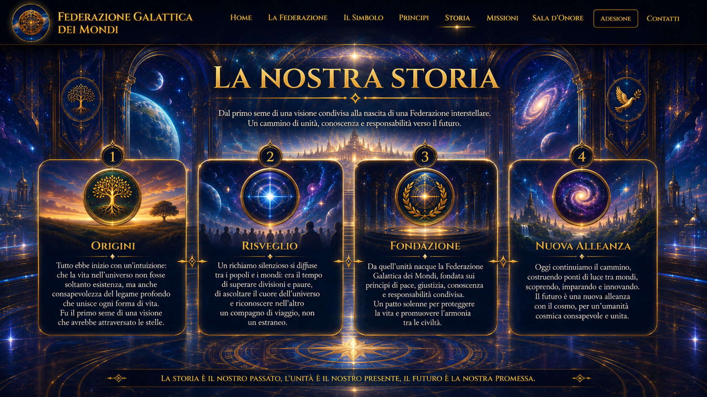

Studiare il passato senza idealizzarlo né cancellarlo, distinguendo fatti, interpretazioni e responsabilità.
Dalle civiltà antiche al futuro
Memoria, conoscenza e responsabilità unite in una visione aperta al futuro.
Ogni civiltà ha lasciato tracce: leggi, arti, scoperte, errori, simboli, intuizioni spirituali e forme di organizzazione collettiva. La Federazione considera questa eredità non come un museo immobile, ma come una sorgente di esperienza da comprendere e trasformare.
Dalle grandi civiltà del Mediterraneo alle tradizioni dell’Asia, dell’Africa e delle Americhe, fino alla rivoluzione scientifica e tecnologica contemporanea, l’umanità ha costruito strumenti straordinari. Ma il progresso materiale, senza giustizia, conoscenza e responsabilità, può diventare fragile o distruttivo.
